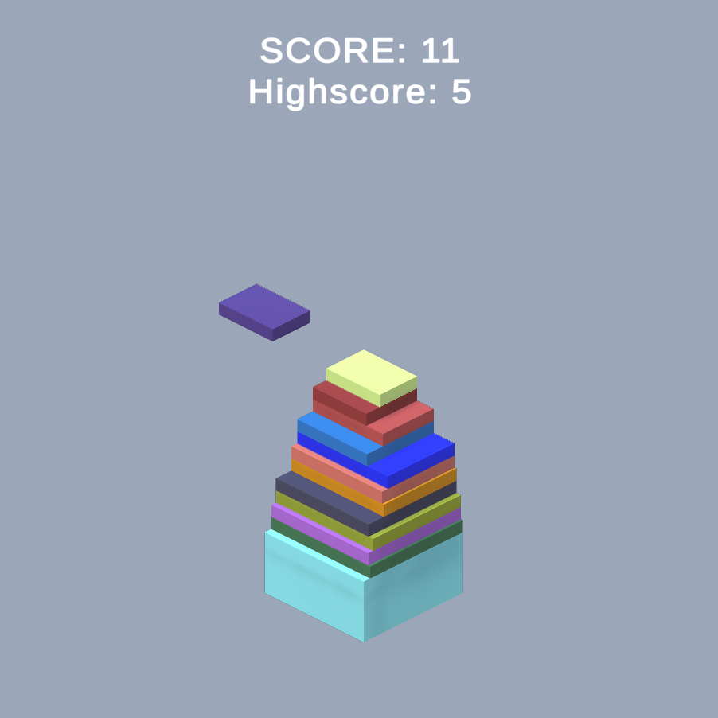

Using Unity 3D
Build stack is a game where you build a stack to see how high you can go. We start off with two spawners on the left and right sides of the screen which alternate spawning slabs. These slabs move towards the center stack and the player's job is to line them up with the stack as best they can in order to create the tallest stack possible. To start right click or press spacebar and then again to stop and place the current slab. Any overhang gets cut off and all future slabs are resized to the size of the remaining piece. The game ends when any slab is stopped and misses the main stack.
This is a simpler project that mostly just solidified my confidence in using Unity and setting up a workflow. The most challenging (confusing) part was the math needed for spawning both a new remaining and overhang piece after cutting the slab. With this project I learned about gizmos and TextMeshPro but mostly this was a programming heavy project.
At the start a cube/slab prefab with its own moving script is instantiated. Every slab knows which direction it is moving by knowing from which of the two spawners it came. The current moving slab also reacts to the player's input and handles the logic of slicing itself into a remaining and hangover piece. The game difficulty increases by spawning faster moving slabs up until slab forty is placed. Going past or stopping before the stack ends the game and triggers a restart option.
Other small quality of live things include adjusting the camera height so that the stack is always in center view once it starts getting too tall, UI using TextMeshPro is for displaying current score and highscore much like in previous Flappy Bird project, and gizmos used to highlight the spawn points.